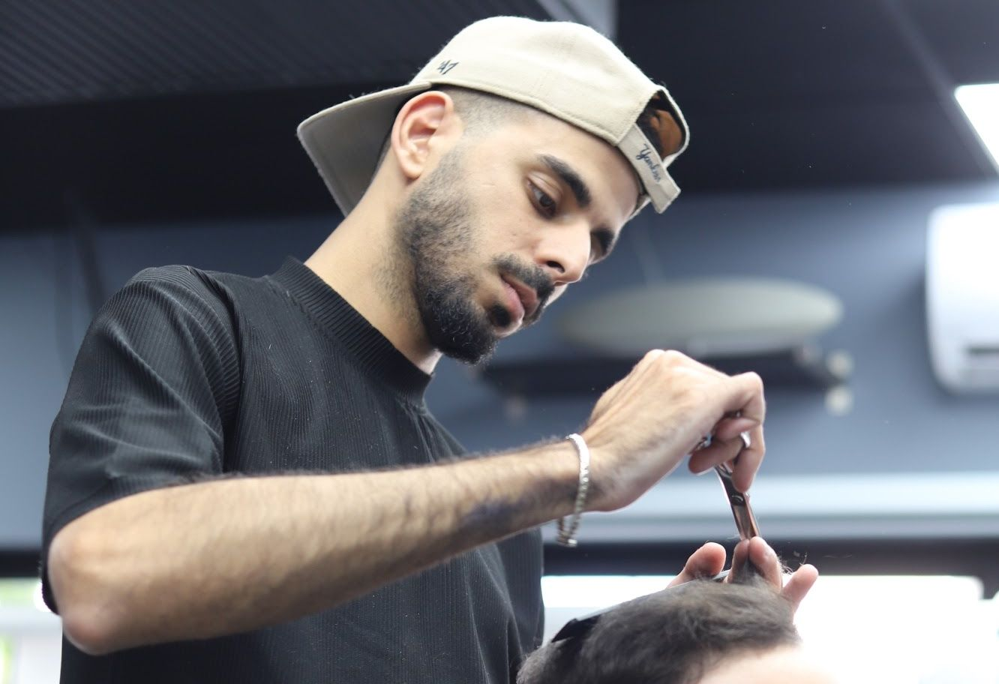
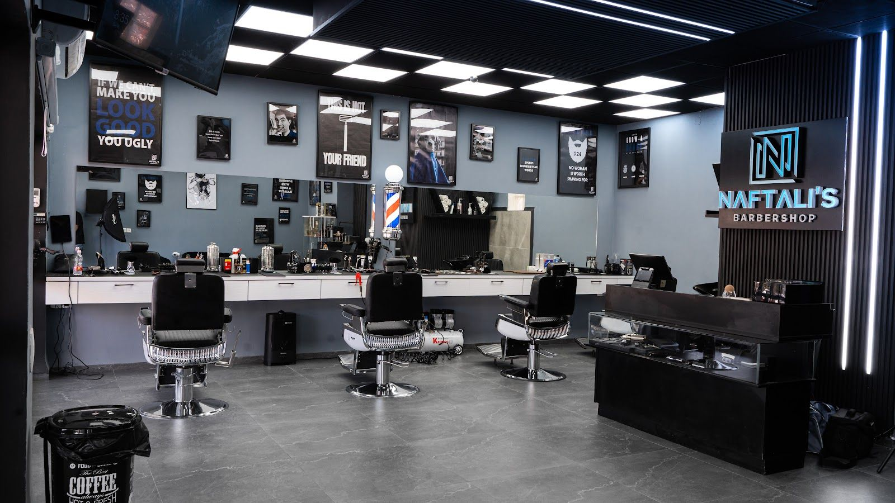
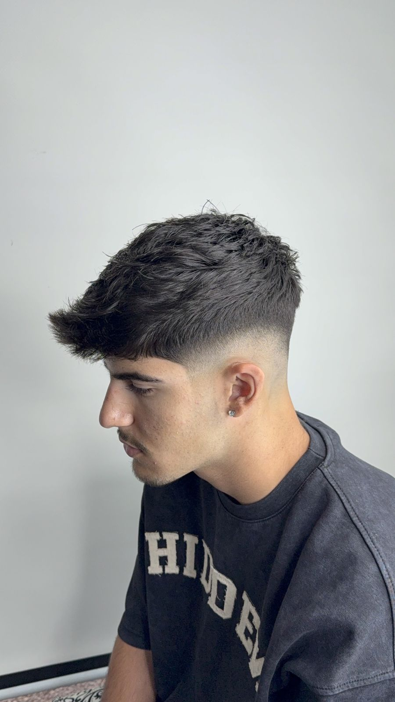
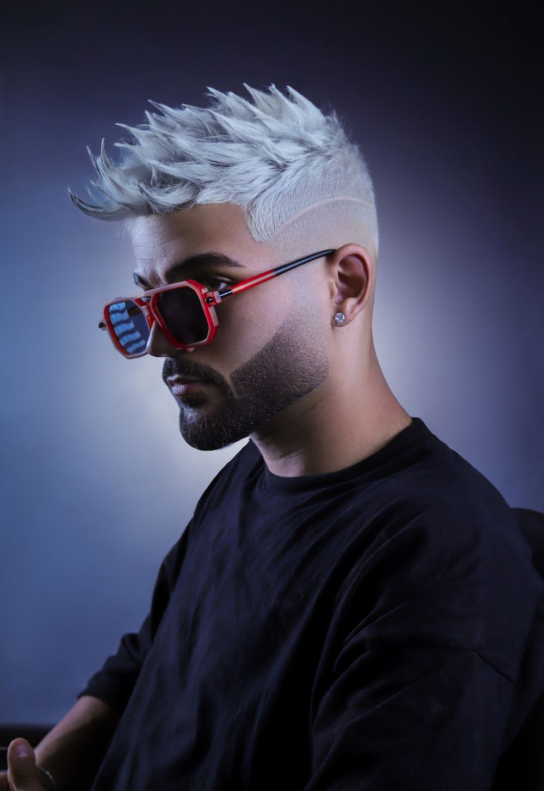
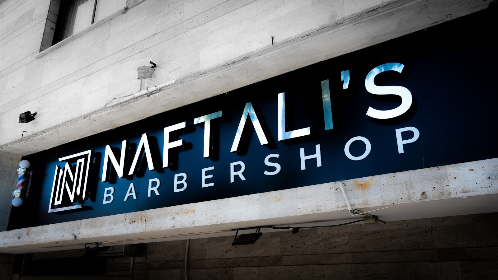
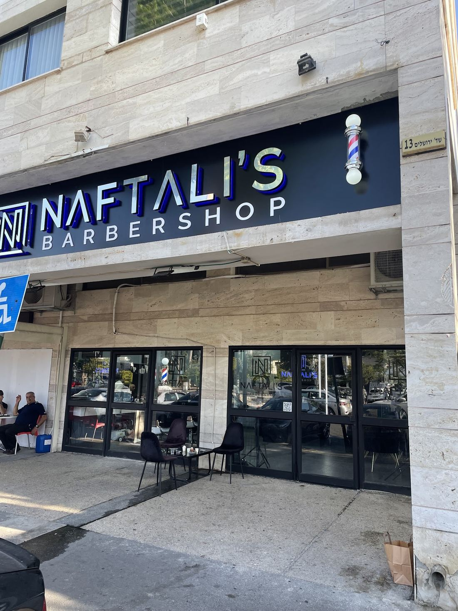

תספורת גבריםMen’s cuts
מספריים ומכונה.Scissors and clippers.
קונספט לדוגמה שנבנה עבור Barbershop Naftali’s · זה אינו האתר הרשמי של העסקA sample concept built for Barbershop Naftali’s · This is not the business’s official website

תספורות לגברים ולילדים, שדרות ירושלים 13, קריית ביאליק.Haircuts for men and kids, 13 Sderot Yerushalayim, Kiryat Bialik.
פייד נבנה מספר אחרי מספר במכונה, עד שהמעבר נעלם.A fade is built guard by guard, until the line disappears.
שתי עבודות מתוך תמונות העסק בגוגל · המספרים להמחשהTwo cuts from the business’s Google photos · guard numbers for illustration



מספריים ומכונה.Scissors and clippers.
גם
לילדים.Kids
too.
באותו כיסא.Same chair.

קריית ביאליק.Kiryat Bialik.
א׳–ה׳
10–20Sun–Thu
10–20
שישי 10–15 · שבת סגורFri 10–15 · Sat closed
תור
באפליקציהBook in
the app
של המספרה, לאנדרואיד ולאייפון.The shop’s own, Android and iPhone.
בשביל מי?Who is it for?
איזה מספר בצדדים?Which guard on the sides?
איזה יום?Which day?
אל: Naftali’s · 054-594-1196To: Naftali’s · 054-594-1196
שירות מקצועי ואדיב, תספורת ברמה גבוהה עם תשומת לב לפרטים. האווירה נעימה והתוצאה בדיוק כמו שרציתי. ממליץ בחום
Professional, kind service, a high-level haircut with attention to detail. The atmosphere is pleasant and the result was exactly what I wanted. Warmly recommended
הסתפרתי אצל יוסי רטה המקצוען, לא רציתי להחליף את הספר שלי אבל נתקעתי ומאז לא יכול לעזוב את יוסי. הבן אדם מקצוען!!!!
I had my hair cut by Yossi Reta, a real pro. I didn’t want to switch from my barber, but I got stuck, and since then I can’t leave Yossi. The man is a pro!!!!
כלל הצוות מקצועי, כמעט ולא מחכים בתור והכי חשוב שמעריכים גם את הזמן של הלקוח. אין פעם שלא יוצאים מרוצים
The whole team is professional, you hardly wait in line, and most importantly they value the customer’s time too. There’s never a time you don’t leave happy
מספרה של מקצוענים עם יחס אישי לכל אחד, דואגים לעמוד בזמנים תמיד ובכל תספורת לצאת מרוצה. ממליץ לכל אחד על המספרה הזאת.
A barbershop of professionals with a personal touch for everyone; they always make sure to keep to time and that every haircut leaves you happy. I recommend this barbershop to everyone.
איך קובעים תור?How do I book? באפליקציית התורים של המספרה, בוואטסאפ או בטלפון 054-594-1196.In the shop’s booking app, on WhatsApp or by phone on 054-594-1196.
מספרים גם ילדים?Do you cut kids’ hair? כן. Naftali’s היא מספרת גברים וילדים.Yes. Naftali’s is a barbershop for men and kids.
מתי פתוח?When are you open? ראשון עד חמישי 10:00–20:00, שישי 10:00–15:00, שבת סגור.Sunday to Thursday 10:00–20:00, Friday 10:00–15:00, closed on Saturday.
איפה זה בדיוק?Where exactly? שדרות ירושלים 13, קריית ביאליק. מחפשים את השלט הכהה עם ה-N מעל החלונות.13 Sderot Yerushalayim, Kiryat Bialik. Look for the dark sign with the N above the windows.

קריית ביאליקKiryat Bialik